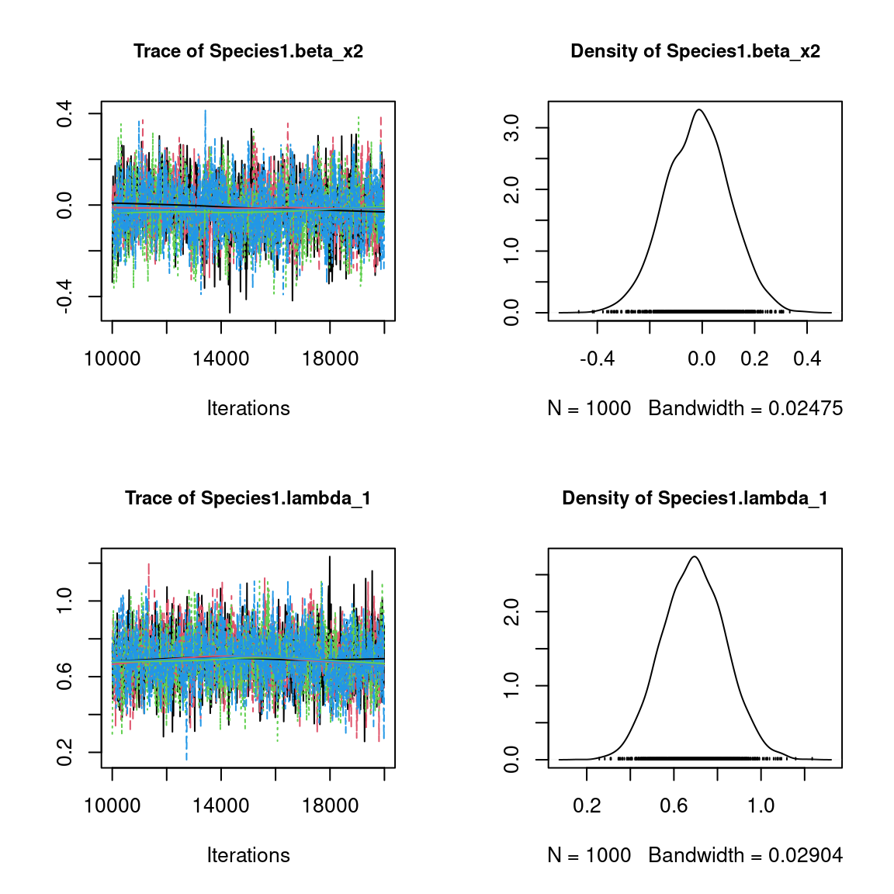
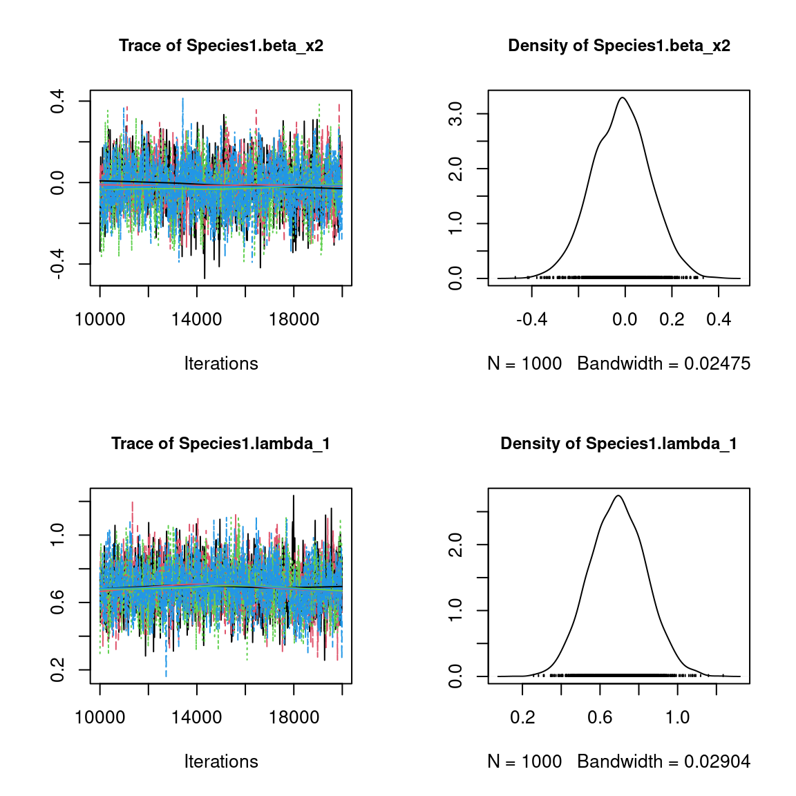
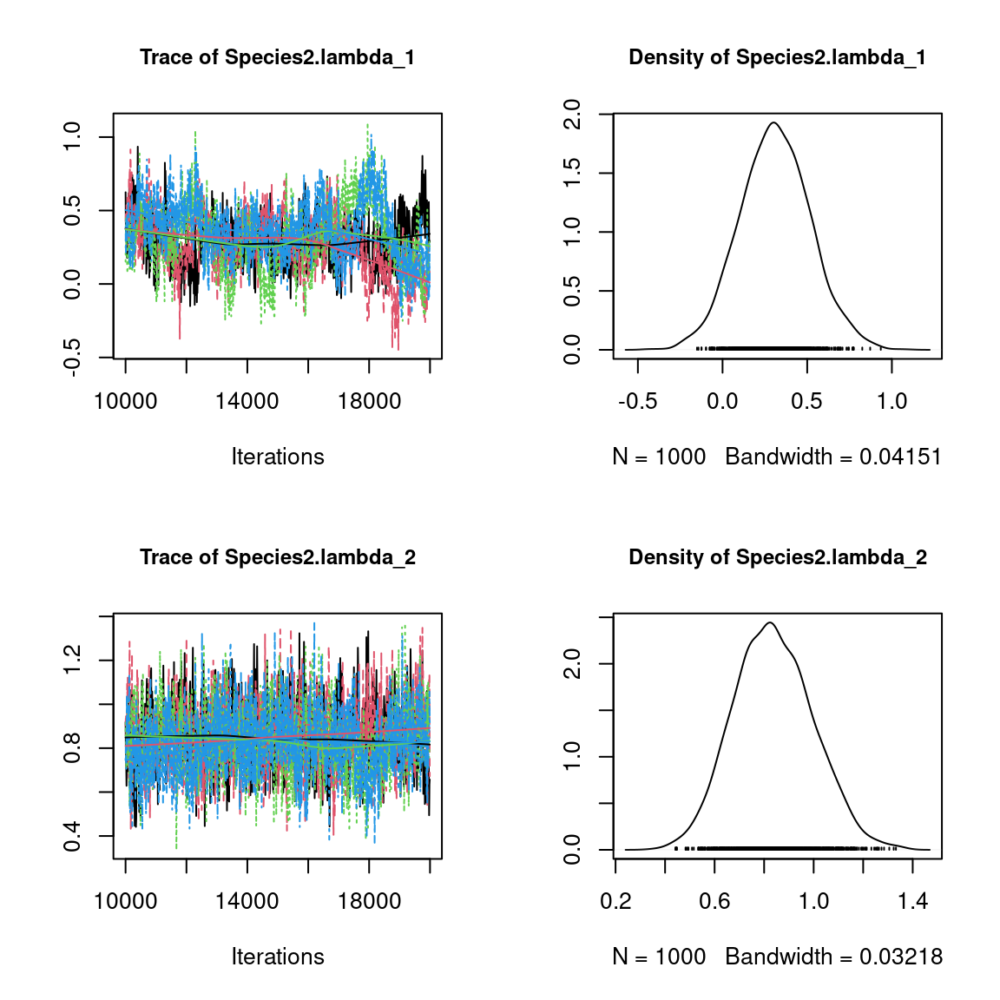
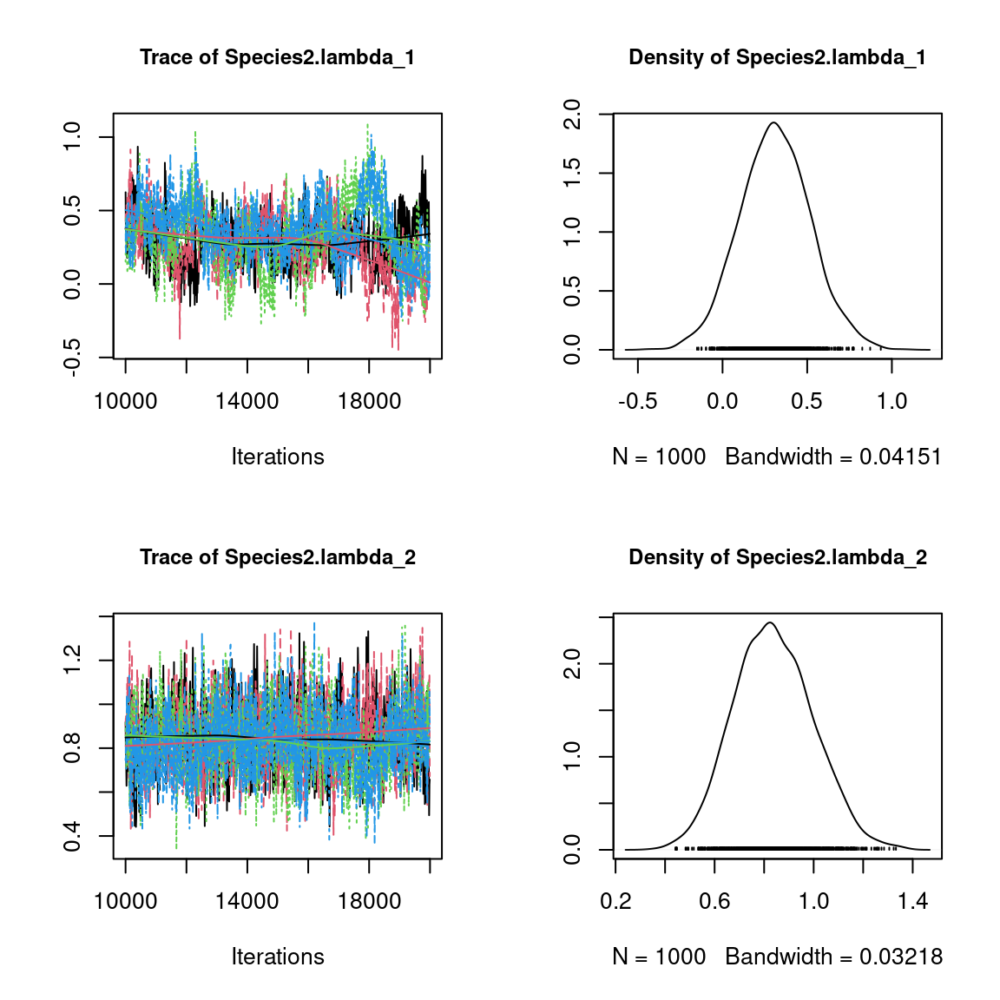
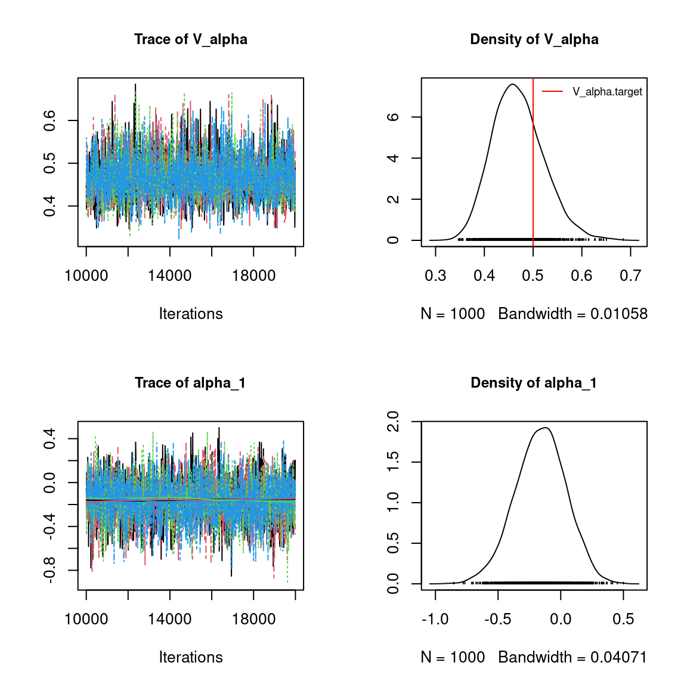
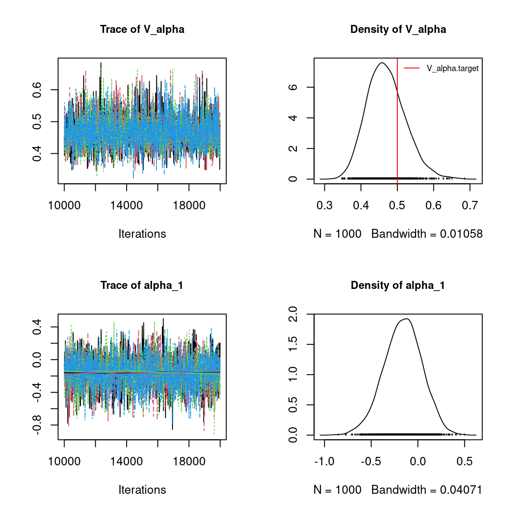
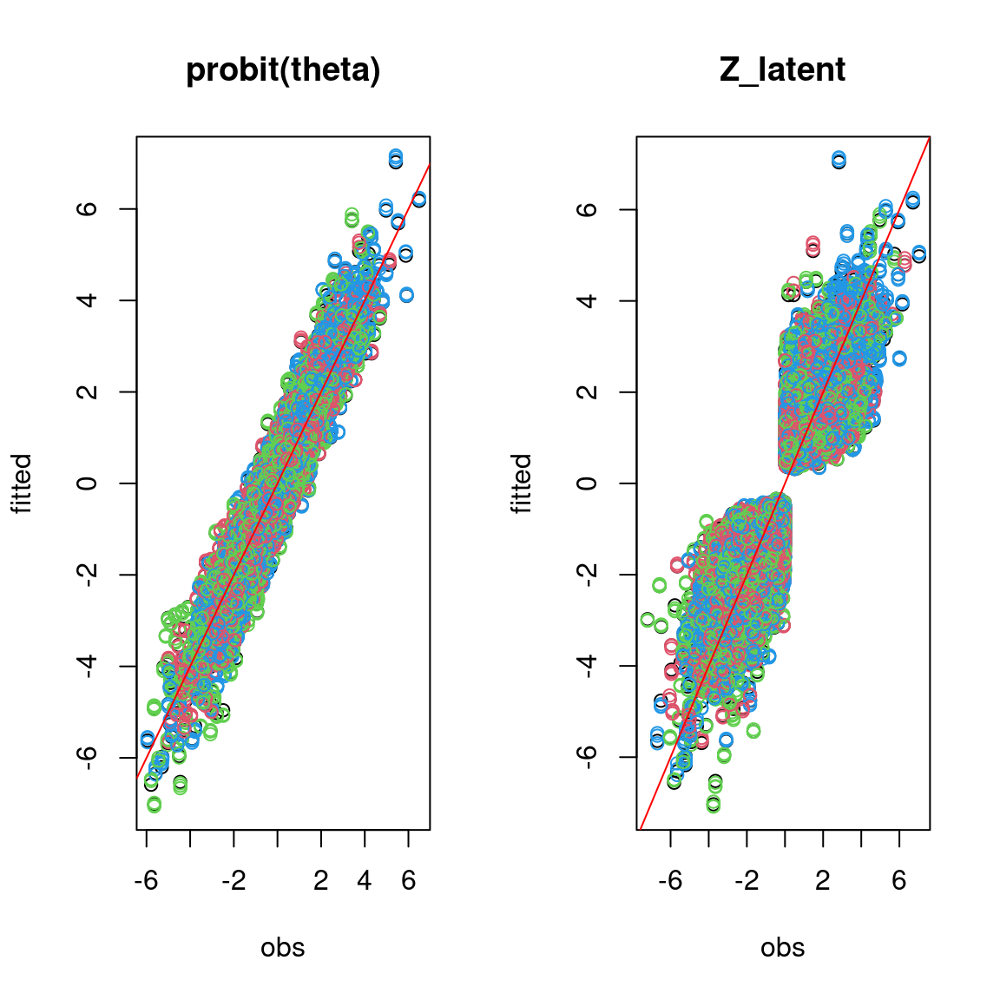
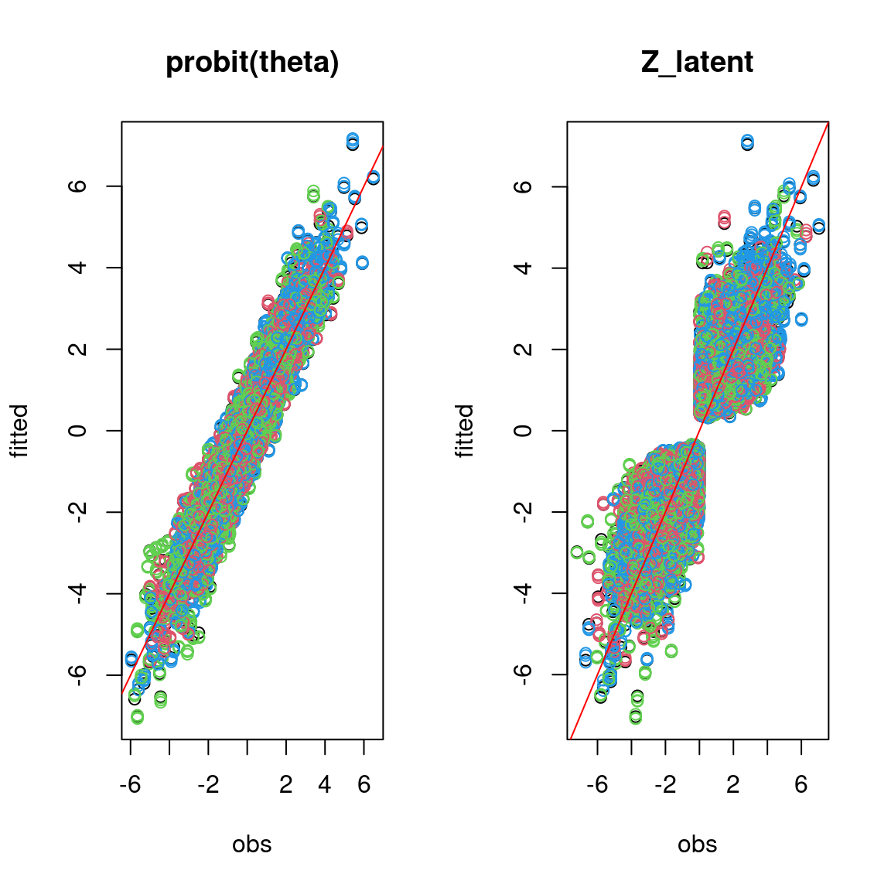

1 Generating data for a Hierarchical Gaussian Linear Regression
1.1 Binomial model for presence-absence data
We consider a latent variable model (LVM) to account for species co-occurrence on all sites (Warton et al. 2015).
\[y_{ij} \sim \mathcal{B}ernoulli(\theta_{ij})\]
\[ \mathrm{g}(\theta_{ij}) =\alpha_i + X_i\beta_j + W_i\lambda_j \]
- \(\mathrm{g}(\cdot)\): Link function probit.
- \(\alpha_i\): Site random effect with \(\alpha_i \sim \mathcal{N}(0, V_{\alpha})\). Corresponds to a mean suitability for site \(i\).
- \(X_i\): Vector of explanatory variables for site \(i\) (including intercept).
- \(\beta_j\): Effects of the explanatory variables on the probability of presence of species \(j\).
- \(W_i\): Vector of random latent variables for site \(i\). \(W_i \sim N(0, 1)\). The number of latent variables must be fixed by the user (default to 2).
- \(\lambda_j\): Effects of the latent variables on the probability of presence of species \(j\). Also known as “factor loadings” (Warton et al. 2015).
This model is equivalent to a multivariate GLMM \(\mathrm{g}(\theta_{ij}) =\alpha_i + X_i.\beta_j + u_{ij}\), where \(u_{ij} \sim \mathcal{N}(0, \Sigma)\) with the constraint that the variance-covariance matrix \(\Sigma = \Lambda \Lambda^{\prime}\), where \(\Lambda\) is the full matrix of factor loadings, with the \(\lambda_j\) as its columns.
1.2 Data-set simulation
We generate presence-absence data following this generalized multivariate linear model with a probit link function, which includes latent variables and random site effect.
#==================
#== Data simulation
#= Number of sites
nsite <- 210
#= Set seed for repeatability
seed <- 1234
set.seed(seed)
#= Number of species
nsp <- 70
#= Number of latent variables
n_latent <- 2
#= Ecological process (suitability)
x1 <- rnorm(nsite,0,1)
x2 <- rnorm(nsite,0,1)
X <- cbind(rep(1,nsite),x1,x2)
np <- ncol(X)
#= Latent variables W
W <- matrix(rnorm(nsite*n_latent,0,1), nrow=nsite, ncol=n_latent)
#= Fixed species effect beta
beta.target <- t(matrix(runif(nsp*ncol(X),-1,1),
byrow=TRUE, nrow=nsp))
#= Factor loading lambda
mat <- t(matrix(runif(nsp*n_latent,-1,1), byrow=TRUE, nrow=nsp))
diag(mat) <- runif(n_latent,0,1)
lambda.target <- matrix(0,n_latent,nsp)
lambda.target[upper.tri(mat,diag=TRUE)] <- mat[upper.tri(mat, diag=TRUE)]
#= Variance of random site effect
V_alpha.target <- 0.5
#= Random site effect alpha
alpha.target <- rnorm(nsite,0,sqrt(V_alpha.target))
#= probit(theta)
probit_theta <- X%*%beta.target + W%*%lambda.target + alpha.target
# Latent variable Z
e <- matrix(rnorm(nsp*nsite,0,1),nsite,nsp)
Z_true <- probit_theta + e
# Presence-absence matrix Y
Y <- matrix (NA, nsite,nsp)
for (i in 1:nsite){
for (j in 1:nsp){
if ( Z_true[i,j] > 0) {Y[i,j] <- 1}
else {Y[i,j] <- 0}
}
}
colnames(Y) <- paste0("Species", 1:nsp)We look at the number of observations per site.
head(Y)
#> Species1 Species2 Species3 Species4 Species5 Species6 Species7 Species8
#> [1,] 0 1 1 1 1 0 1 0
#> [2,] 0 0 0 0 0 1 0 0
#> [3,] 0 0 0 0 0 1 0 0
#> [4,] 0 1 1 1 0 0 0 1
#> [5,] 1 0 0 0 0 1 0 1
#> [6,] 0 0 0 0 0 1 0 1
#> Species9 Species10 Species11 Species12 Species13 Species14 Species15
#> [1,] 0 1 0 0 1 0 0
#> [2,] 0 1 0 0 0 0 0
#> [3,] 1 0 0 0 0 0 0
#> [4,] 0 1 0 0 0 0 0
#> [5,] 0 1 0 0 0 0 1
#> [6,] 0 0 1 0 0 0 0
#> Species16 Species17 Species18 Species19 Species20 Species21 Species22
#> [1,] 1 1 0 0 0 0 1
#> [2,] 0 0 0 0 0 0 0
#> [3,] 0 1 1 1 1 0 0
#> [4,] 1 0 0 1 0 1 0
#> [5,] 1 1 1 1 0 1 0
#> [6,] 0 0 1 1 0 1 0
#> Species23 Species24 Species25 Species26 Species27 Species28 Species29
#> [1,] 1 1 1 0 0 0 0
#> [2,] 0 0 0 0 0 0 0
#> [3,] 0 1 1 1 1 0 0
#> [4,] 1 0 0 0 0 1 0
#> [5,] 0 0 1 1 0 0 0
#> [6,] 0 0 1 0 0 0 0
#> Species30 Species31 Species32 Species33 Species34 Species35 Species36
#> [1,] 1 0 0 1 1 1 0
#> [2,] 0 0 0 0 0 0 0
#> [3,] 1 0 0 1 1 1 0
#> [4,] 0 1 0 0 1 0 0
#> [5,] 1 1 0 0 0 0 1
#> [6,] 1 1 0 0 1 1 0
#> Species37 Species38 Species39 Species40 Species41 Species42 Species43
#> [1,] 1 1 1 0 0 1 1
#> [2,] 0 0 0 0 0 0 0
#> [3,] 0 0 1 0 0 0 0
#> [4,] 0 0 0 0 0 1 1
#> [5,] 0 0 1 1 0 0 0
#> [6,] 0 0 1 1 0 0 1
#> Species44 Species45 Species46 Species47 Species48 Species49 Species50
#> [1,] 0 1 0 0 1 0 1
#> [2,] 1 1 0 0 0 0 0
#> [3,] 1 0 1 1 0 1 0
#> [4,] 0 1 0 0 1 0 1
#> [5,] 1 0 0 1 1 1 1
#> [6,] 1 0 0 1 1 0 0
#> Species51 Species52 Species53 Species54 Species55 Species56 Species57
#> [1,] 0 1 0 0 0 1 0
#> [2,] 0 1 0 0 0 0 0
#> [3,] 1 1 0 0 0 0 0
#> [4,] 0 1 0 1 0 0 0
#> [5,] 1 1 0 0 0 0 0
#> [6,] 1 0 0 0 0 0 1
#> Species58 Species59 Species60 Species61 Species62 Species63 Species64
#> [1,] 1 0 0 1 0 0 1
#> [2,] 0 0 0 0 0 0 0
#> [3,] 0 1 0 1 1 1 1
#> [4,] 0 1 0 0 0 0 1
#> [5,] 1 1 0 0 1 0 1
#> [6,] 0 1 0 0 1 0 0
#> Species65 Species66 Species67 Species68 Species69 Species70
#> [1,] 0 0 0 1 0 0
#> [2,] 0 0 0 0 0 0
#> [3,] 1 0 1 0 0 0
#> [4,] 0 0 0 1 0 1
#> [5,] 0 1 1 0 1 1
#> [6,] 0 0 1 0 0 1
# Number of observations per site
nobs_site <- apply(Y, 1, sum)
nobs_site
#> [1] 31 5 28 23 32 23 36 24 26 30 51 42 35 16 47 15 26 17 20 21 53 30 24 38 39
#> [26] 23 34 38 58 49 41 39 12 25 25 45 33 31 58 34 32 27 40 18 48 28 30 26 41 19
#> [51] 26 31 34 36 16 30 13 21 46 34 32 28 25 25 39 35 37 19 37 40 43 29 26 31 39
#> [76] 56 34 41 38 56 50 28 30 34 32 31 37 19 17 45 40 26 50 30 24 22 33 36 37 37
#> [101] 45 36 47 52 4 27 43 19 19 40 21 9 43 27 36 40 48 39 52 50 29 17 38 50 20
#> [126] 47 33 32 28 47 52 55 23 42 30 24 42 38 46 54 45 20 37 52 48 17 39 26 21 21
#> [151] 30 33 48 38 35 31 48 25 34 39 48 42 14 19 27 11 30 54 7 41 34 25 48 41 33
#> [176] 26 20 20 55 29 29 23 29 26 20 60 43 11 51 41 38 39 33 41 22 21 25 32 37 40
#> [201] 38 52 40 47 48 28 37 38 38 18
# Number of observations per species
nobs_sp <- apply(Y, 2, sum)
nobs_sp
#> Species1 Species2 Species3 Species4 Species5 Species6 Species7 Species8
#> 60 93 126 122 114 128 53 101
#> Species9 Species10 Species11 Species12 Species13 Species14 Species15 Species16
#> 66 125 84 77 58 71 124 80
#> Species17 Species18 Species19 Species20 Species21 Species22 Species23 Species24
#> 95 109 105 125 105 86 110 128
#> Species25 Species26 Species27 Species28 Species29 Species30 Species31 Species32
#> 114 127 83 67 95 127 129 108
#> Species33 Species34 Species35 Species36 Species37 Species38 Species39 Species40
#> 148 147 156 99 84 75 106 78
#> Species41 Species42 Species43 Species44 Species45 Species46 Species47 Species48
#> 42 83 126 143 124 61 92 125
#> Species49 Species50 Species51 Species52 Species53 Species54 Species55 Species56
#> 133 119 97 148 75 63 86 71
#> Species57 Species58 Species59 Species60 Species61 Species62 Species63 Species64
#> 65 107 136 64 97 147 56 137
#> Species65 Species66 Species67 Species68 Species69 Species70
#> 61 125 65 123 102 80
# Remove species with less than 5 presences
rare_sp <- which(apply(Y, 2, sum) < 5)
if(length(rare_sp)!=0){
Y <- Y[, -rare_sp]
probit_theta <- probit_theta[, -rare_sp]
Z_true <- Z_true[, -rare_sp]
nsp <- ncol(Y)
nsp
nsite <- nrow(Y)
nsite
}2 Fitting joint Species Distribution Models in parallel
We simulate in parallel two Monte-Carlo Markov chains (MCMC) of parameters values for this binomial model, using the R packages doParallel and foreach in a first time and snow and snowfall in a second time.
2.1 Using doParallel and foreach
We estimate the model parameters with the function jSDM_binomial_probit().
library(jSDM)
library(parallel)
library(doParallel)
## Make a cluster for parallel MCMCs
nchains <- 2
ncores <- nchains ## One core for each MCMC chains
clust <- makeCluster(ncores)
registerDoParallel(clust)
# Number of latent variables
n_latent <- 2
# Starting parameters
lambda_start <- c(-1,1)
beta_start <- c(-1,1)
W_start <- c(0.1,-0.1)
alpha_start <- c(-0.5, 0.5)
V_alpha_start <- c(1, 0.5)
#formatting of starting parameters
#and constraints on lambda generated by the function
# Seeds
seed_mcmc <- c(1234, 4321)
# Model
mod_probit_1 <-
foreach (i = 1:nchains) %dopar% {
# Infering model parameters
mod <- jSDM::jSDM_binomial_probit(
# Iterations
burnin=10000, mcmc=10000, thin=10,
# Data
presence_data=Y,
site_data = X[,-1],
site_formula = ~.,
# Model specification
n_latent=n_latent,
site_effect="random",
# Priors
V_beta = 1,
mu_beta = 0,
mu_lambda = 0,
V_lambda= 1,
shape=0.5,
rate=0.0005,
# Starting values
beta_start = beta_start[i],
lambda_start = lambda_start[i],
W_start=W_start[i],
alpha_start = alpha_start[i],
V_alpha = V_alpha_start[i],
# Other
seed = seed_mcmc[i],
verbose = 1
)
return(mod)
}
# Stop cluster
# stopCluster(clust)
2.2 Using snow and snowfall
## load libraries
library(snow)
library(snowfall)
## Setting the number of CPUs to be 2
sfInit(parallel=TRUE, cpus=2)
## Assigning the jSDM library to each CPU
sfLibrary(jSDM)
# Number of latent variables
n_latent <- 2
# Starting parameters
# formatting of starting parameters
# and constraints on lambda generated by the function
lambda_start <- c(-0.5, 0.5)
beta_start <- c(-0.5,0.5)
W_start <- c(0.2,-0.2)
alpha_start <- c(-0.2, 0.2)
V_alpha_start <- c(0.2, 0.7)
# Seeds
seed_mcmc <- c(123, 321)
# list of data and starting parameters
listData <- list(Y=Y, X=X[,-1], beta_start, lambda_start, W_start, alpha_start, V_alpha_start, seed_mcmc)
## Defining the function that will run MCMC on each CPU
# Arguments:
# i - will be 1 or 2
mod.MCMChregress <- function (i,listData) {
# data
Y <- listData[[1]]
X <- listData[[2]]
beta_start <- listData[[3]]
lambda_start <- listData[[4]]
W_start <- listData[[5]]
alpha_start <- listData[[6]]
V_alpha_start <- listData[[7]]
seed_mcmc <- listData[[8]]
# Infering model parameters
mod <- jSDM_binomial_probit(
# Iterations
burnin=10000, mcmc=10000, thin=10,
# Data
presence_data=Y,
site_data = X,
site_formula = ~.,
# Model specification
n_latent=2,
site_effect="random",
# Priors
V_beta = 1,
mu_beta = 0,
mu_lambda = 0,
V_lambda= 1,
shape=0.5,
rate=0.0005,
# Starting values
beta_start = beta_start[i],
lambda_start = lambda_start[i],
W_start = W_start[i],
alpha_start = alpha_start[i],
V_alpha = V_alpha_start[i],
# Other
seed = seed_mcmc[i],
verbose = 1
)
return(mod)
}# Starting parameters
## Calling the sfLapply function that will run on each of the CPUs
mod_probit_2 <- sfLapply(1:2, fun=mod.MCMChregress, listData=listData)
## Stop cluster
#sfStop()
# Output
n_chains <- length(c(mod_probit_1, mod_probit_2))
mod <- mod_probit_1[[1]]
str_mod <- paste(capture.output(str(mod, max.level = 1)), collapse="\n")
save(n_chains, str_mod, file="jSDM_in_parallel_files/output.rda")
load("jSDM_in_parallel_files/output.rda")
cat("number of chains :", n_chains,"\n")
#> number of chains : 4
cat("content of each chain :", str_mod,"\n")
#> content of each chain : List of 9
#> $ mcmc.Deviance : 'mcmc' num [1:1000, 1] 11892 11903 11993 11911 11955 ...
#> ..- attr(*, "mcpar")= num [1:3] 10001 19991 10
#> ..- attr(*, "dimnames")=List of 2
#> $ mcmc.alpha : 'mcmc' num [1:1000, 1:210] -0.0559 -0.1139 0.0947 -0.2999 -0.1052 ...
#> ..- attr(*, "mcpar")= num [1:3] 10001 19991 10
#> ..- attr(*, "dimnames")=List of 2
#> $ mcmc.V_alpha : 'mcmc' num [1:1000, 1] 0.454 0.393 0.474 0.436 0.42 ...
#> ..- attr(*, "mcpar")= num [1:3] 10001 19991 10
#> ..- attr(*, "dimnames")=List of 2
#> $ mcmc.sp :List of 70
#> $ mcmc.latent :List of 2
#> $ Z_latent : num [1:210, 1:70] -1.758 -2.42 -1.414 -1.491 0.657 ...
#> ..- attr(*, "dimnames")=List of 2
#> $ probit_theta_latent: num [1:210, 1:70] -1.628 -2.394 -1.203 -1.271 -0.523 ...
#> ..- attr(*, "dimnames")=List of 2
#> $ theta_latent : num [1:210, 1:70] 0.0666 0.0128 0.1321 0.1247 0.3084 ...
#> ..- attr(*, "dimnames")=List of 2
#> $ model_spec :List of 24
#> - attr(*, "class")= chr "jSDM"3 Evaluation of MCMC convergence
3.1 The Gelman–Rubin convergence diagnostic
3.1.1 Definition
The Gelman–Rubin diagnostic evaluates MCMC convergence by analyzing the difference between multiple Markov chains. The convergence is assessed by comparing the estimated between-chains and within-chain variances for each model parameter. Large differences between these variances indicate non convergence. See Gelman & Rubin (1992) and Brooks & Gelman (1998) for the detailed description of the method.
Suppose we have \(M\) chains, each of length \(N\), although the chains may be of different lengths. The same-length assumption simplifies the formulas and is used for convenience. For a model parameter \(\theta\), let \(\left(\theta_{𝑚t}\right)_{t=1}^N\) be the \(𝑚\)th simulated chain, \(𝑚=1,\dots,𝑀\).
Let \(\hat{\theta}_𝑚=\frac{1}{N}\sum\limits_{t=1}^N \hat{\theta}_{mt}\) and \(\hat{\sigma}^2_𝑚=\frac{1}{N-1}\sum\limits_{t=1}^N (\hat{\theta}_{mt}-\hat{\theta}_𝑚)^2\) be the sample posterior mean and variance of the \(𝑚\)th chain, and let the overall sample posterior mean be \(\hat{\theta}=\frac{1}{𝑀}\sum\limits_{m=1}^𝑀 \hat{\theta}_m\).
The between-chains and within-chain variances are given by \[B=\frac{N}{M-1}\sum\limits_{m=1}^𝑀 (\hat{\theta}_m - \hat{\theta})^2\] \[W=\frac{1}{M}\sum\limits_{m=1}^𝑀\hat{\sigma}^2_m\]
Under certain stationarity conditions, the pooled variance :
\[\hat{V}=\frac{N-1}{N}W + \frac{M+1}{MN}B\]
is an unbiased estimator of the marginal posterior variance of \(\theta\) (Gelman & Rubin (1992)). The potential scale reduction factor (PSRF) is defined to be the ratio of \(\hat{𝑉}\) and \(𝑊\). If the \(𝑀\) chains have converged to the target posterior distribution, then PSRF should be close to 1. The article Brooks & Gelman (1998) corrected the original PSRF by accounting for sampling variability as follows: \[ \hat{R}= \sqrt{\frac{\hat{d}+3}{\hat{d}+1}\frac{\hat{V}}{W}}\]
where \(\hat{d}\) is the degrees of freedom estimate of a \(𝑡\) distribution.
PSRF estimates the potential decrease in the between-chains variability \(𝐵\) with respect to the within-chain variability \(𝑊\). If \(\hat{R}\) is large, then longer simulation sequences are expected to either decrease \(𝐵\) or increase \(𝑊\) because the simulations have not yet explored the full posterior distribution. As the article Brooks & Gelman (1998) have suggested, if \(\hat{R} < 1.2\) for all model parameters, one can be fairly confident that convergence has been reached. Otherwise, longer chains or other means for improving the convergence may be needed. Even more reassuring is to apply the more stringent condition \(\hat{R} < 1.1\).
3.1.2 Compute \(\hat{R}\)
We evaluate the convergence of the MCMC output in which four parallel chains are run (with starting values that are over dispersed relative to the posterior distribution). Convergence is diagnosed when the four chains have ‘forgotten’ their initial values, and the output from all chains is indistinguishable. If the convergence diagnostic gives values of potential scale reduction factor (PSRF) or \(\hat{R}\) substantially above 1, its indicates lack of convergence.
mod_probit <- c(mod_probit_1,mod_probit_2)
burnin <- mod_probit[[1]]$model_spec$burnin
ngibbs <- burnin + mod_probit[[1]]$model_spec$mcmc
thin <- mod_probit[[1]]$model_spec$thin
require(coda)
arr2mcmc <- function(x) {
return(mcmc(as.data.frame(x),
start=burnin+1 , end=ngibbs, thin=thin))
}
# MCMC lists
mcmc_list_alpha <- mcmc.list(lapply(lapply(mod_probit,"[[","mcmc.alpha"), arr2mcmc))
mcmc_list_V_alpha <- mcmc.list(lapply(lapply(mod_probit,"[[","mcmc.V_alpha"), arr2mcmc))
mcmc_list_lv <- mcmc.list(lapply(lapply(mod_probit,"[[","mcmc.latent"), arr2mcmc))
mcmc_list_abs_lv <- mcmc.list(lapply(lapply(mcmc_list_lv, abs),arr2mcmc))
mcmc_list_deviance <- mcmc.list(lapply(lapply(mod_probit,"[[","mcmc.Deviance"), arr2mcmc))
mcmc_list_param <- mcmc.list(lapply(lapply(mod_probit,"[[","mcmc.sp"), arr2mcmc))
mcmc_list_lambda <- mcmc.list(lapply(mcmc_list_param[,grep("lambda",
colnames(mcmc_list_param[[1]]),
value=TRUE)], arr2mcmc))
mcmc_list_abs_lambda <- mcmc.list(lapply(lapply(mcmc_list_lambda, abs),
arr2mcmc))
mcmc_list_deviance <- mcmc.list(lapply(lapply(mod_probit,"[[","mcmc.Deviance"), arr2mcmc))
nsamp <- nrow(mcmc_list_alpha[[1]])
# psrf gelman indice
psrf_alpha <- mean(gelman.diag(mcmc_list_alpha,
multivariate=FALSE)$psrf[,2])
psrf_V_alpha <- gelman.diag(mcmc_list_V_alpha)$psrf[,2]
psrf_beta <- mean(gelman.diag(mcmc_list_param[, grep("beta", colnames(mcmc_list_param[[1]]))],
multivariate=FALSE)$psrf[,2])
psrf_lambda <- mean(gelman.diag(mcmc_list_lambda,
multivariate=FALSE)$psrf[,2], na.rm=TRUE)
psrf_lv <- mean(gelman.diag(mcmc_list_lv,
multivariate=FALSE)$psrf[,2 ])
psrf_lambda_abs <- mean(gelman.diag(mcmc_list_abs_lambda,
multivariate=FALSE)$psrf[,2], na.rm=TRUE)
psrf_lv_abs <- mean(gelman.diag(mcmc_list_abs_lv,
multivariate=FALSE)$psrf[,2 ])
save(psrf_lambda, psrf_lv, psrf_alpha, psrf_V_alpha, psrf_beta,
file="jSDM_in_parallel_cache/psrf.rda")
Rhat <- data.frame(Rhat=c(psrf_alpha, psrf_V_alpha, psrf_beta, psrf_lambda, psrf_lambda_abs, psrf_lv, psrf_lv_abs),
Variable=c("alpha", "Valpha", "beta", "lambda", "absolute lambda values", "W", "absolute W values"))
# Barplot
library(ggplot2)
ggplot(Rhat, aes(x=Variable, y=Rhat)) +
ggtitle("Averages of Rhat obtained for each type of parameter") +
theme(plot.title = element_text(hjust = 0.5, size=13)) +
geom_bar(fill="skyblue", stat = "identity") +
geom_text(aes(label=round(Rhat,3)), vjust=0, hjust=-0.1) +
geom_hline(yintercept=1, color='red') +
ylim(0, max(Rhat$Rhat)+0.2) +
coord_flip() We can see that the \(\hat{R}\) are very close to 1 for the species effects \(\beta\), the site effects \(\alpha\) and their variance \(V_{alpha}\). We can therefore be fairly confident that convergence has been achieved for these parameters.
The \(\hat{R}\) obtained for the latent variables \(W\) and the factor loadings \(\lambda\) are also very close to 1, indicating that convergence has been reached for these parameters.
However \(\hat{R}\) associated to latent variables and factor loadings can be much greater than 1 in some cases. This can be explained by the fact that \(W\) and \(\lambda\) can alternatively take positive and negative values between and even within MCMC chains, due to identifiability issues between \(W\) and \(\lambda\).
Consequently, we also consider the absolute values of the latent variables \(W\) and the factor loadings \(\lambda\) estimated to compute the \(\hat{R}\) in order to obtain values closer to 1. In this case, we can consider that convergence has been reached for these parameters in absolute value.
4 Representation of results
We visually evaluate the convergence of MCMCs by representing the trace and density a posteriori of some estimated parameters.
## Plot trace and posterior distributions
# for two first species
par(mfrow=c(2,2), cex.main=0.9)
plot(mcmc_list_param[,1:((np+n_latent)*2)],
auto.layout=FALSE)
# for two first sites
plot(mcmc_list_lv[,c(1:2,nsite+1:2)],
auto.layout=FALSE)
par(mfrow=c(2,2))
coda::traceplot(mcmc_list_V_alpha)
coda::densplot(mcmc_list_V_alpha)
abline(v=V_alpha.target, col='red')
legend("topright", legend="V_alpha.target",
lwd=1, col='red', cex=0.7, bty="n")
plot(mcmc_list_alpha[,c(1,2)],
auto.layout=FALSE)
# Deviance
plot(mcmc_list_deviance,
auto.layout=FALSE) 

 

 

Overall, the traces and the densities of the parameters indicate the convergence of the algorithm. Indeed, we observe on the traces that the values oscillate around averages without showing an upward or downward trend and we see that the densities are quite smooth and for the most part of Gaussian form.
5 Accuracy of predictions
We evaluate the accuracy of the estimated parameters by plotting them against the parameters used to simulate the data-set.
## Predictive posterior mean for each observation
nchains <- length(mod_probit)
# Species effects beta and factor loadings lambda
par(mfrow=c(1,2))
for (i in 1:nchains){
param <- matrix(unlist(lapply(mod_probit[[i]]$mcmc.sp,colMeans)), nrow=nsp, byrow=T)
if(i==1){
plot(t(beta.target), param[,1:np],
main="species effect beta",
xlab ="obs", ylab ="fitted")
abline(a=0,b=1,col='red')
}
else{
points(t(beta.target), param[,1:np], col=2:nchains)
}
}
for (i in 1:nchains){
param <- matrix(unlist(lapply(mod_probit[[i]]$mcmc.sp,colMeans)), nrow=nsp, byrow=T)
if (i==1){
plot(t(lambda.target), param[,(np+1):(np+n_latent)],
main="factor loadings lambda",
xlab ="obs", ylab ="fitted")
abline(a=0,b=1,col='red')
} else {
points(t(lambda.target), param[,(np+1):(np+n_latent)],
col=2:nchains)
}
}
## W latent variables
par(mfrow=c(1,2))
mean_W <- matrix(0,nsite,n_latent)
for (l in 1:n_latent) {
for (i in 1:nchains){
mean_W[,l] <- summary(mod_probit[[i]]$mcmc.latent[[paste0("lv_",l)]])[[1]][,"Mean"]
if (i==1){
plot(W[,l], mean_W[,l],
main = paste0("Latent variable W_", l),
xlab ="obs", ylab ="fitted")
abline(a=0,b=1,col='red')
}
else{
points(W[,l], mean_W[,l],col=2:nchains)
}
}
}
#= W.lambda
par(mfrow=c(1,2))
for (i in 1:nchains){
if (i==1){
plot(W%*%lambda.target,mean_W%*%t(param[,(np+1):(np+n_latent)]),
main = "W.lambda",
xlab ="obs", ylab ="fitted")
abline(a=0,b=1,col='red')
}
else{
points(W%*%lambda.target,mean_W%*%t(param[,(np+1):(np+n_latent)])
,col=2:nchains)
}
}
#= Random site effect alpha
plot(alpha.target, colMeans(mod_probit[[1]]$mcmc.alpha),
xlab ="obs", ylab ="fitted", main="site effect alpha")
for (i in 2:nchains){
points(alpha.target, colMeans(mod_probit[[i]]$mcmc.alpha), col=2:nchains)
}
abline(a=0,b=1,col='red')
#= Predictions
par(mfrow=c(1,2))
plot(probit_theta, mod_probit[[1]]$probit_theta_latent,
main="probit(theta)",xlab="obs",ylab="fitted")
for (i in 2:nchains){
## probit(tetha)
points(probit_theta, mod_probit[[i]]$probit_theta_latent,col=c(2:nchains))
}
abline(a=0,b=1,col='red')
## Z
plot(Z_true, mod_probit[[1]]$Z_latent,
main="Z_latent", xlab="obs", ylab="fitted")
for (i in 2:nchains){
points(Z_true, mod_probit[[i]]$Z_latent, col=2:nchains)
}
abline(a=0,b=1,col='red')

 

On the above figures, the estimated parameters are close to the expected values if the points are near the red line representing the identity function (\(y=x\)).